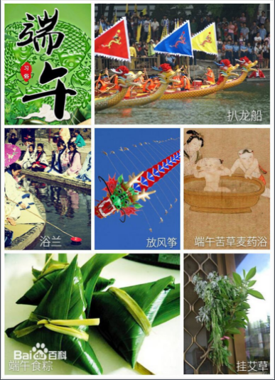

端午节简介
端午节，为每年农历五月初五。据《荆楚岁时记》记载，因仲夏登高，顺阳在上，五月是仲夏，它的第一个午日正是登高顺阳好天气之日，故五月初五亦称为“端阳节”。此外端午节还称“午日节、五月节、龙舟节、浴兰节、诗人节”等。端午节是流行于中国以及汉字文化圈诸国的传统文化节日。
端午节起源于中国，最初为古代百越地区（长江中下游及以南一带）崇拜龙图腾的部族举行图腾祭祀的节日，百越之地春秋之前有在农历五月初五以龙舟竞渡形式举行部落图腾祭祀的习俗。

端午节相关信息
- 端午节除了粽子还吃什么【2017/05/27】
- 黄巢与端午节悬挂菖蒲艾草的习俗【2017/05/27】
- 端午节庆活动 斗草之戏【2017/05/27】
- 流行国家：中国、日本、越南……【2017/05/30】
- 端午节到底该不该快乐【2017/05/28】
- 古人认为五月是毒月五日是恶日 生子男害父女害母 故需禁欲斋戒【2017/05/30】
- 悬挂天中五瑞：石榴花驱虫 蒜头辟邪 菖蒲象征宝剑 艾草代表百福【2017/05/31】
- 入选世界非遗名录 在中国所有传统节日中叫法最多 达二十多个【2017/05/31】